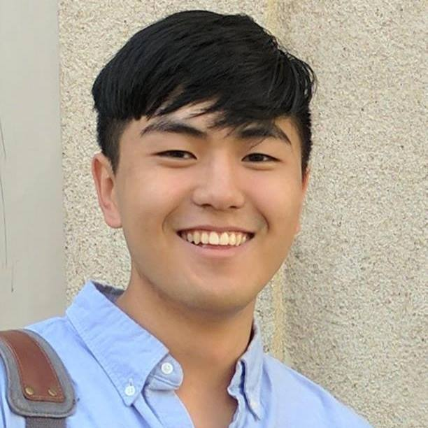
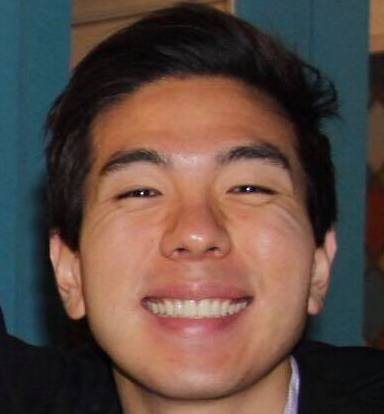

I am an international student from South Korea. At UC Berkeley, I have been studying mechanical engineering and physics, and I’ve loved it so far. My main interests include combustion, waves, and aerodynamics. Most importantly, my favorite egg dish is an omelette!
I am a senior studying mechanical engineering, and my main interests lie in design and aerodynamics. My favorite egg dish is a good, old-fashioned hard boiled egg.
I am a senior at Cal studying mechanical engineering and will graduate this December. During my time at Cal I have been interested in biomechanics as well as design. After graduation, I will be working in the industry and would like to return to school to get my Masters degree. I love eggs benedict!

I am a senior studying mechanical engineering, and I'm interested in fluid mechanics and applications, particularly in the fields of fluid-structure interaction and microscale flows. I hope to continue for a graduate education. My favorite egg dish is a classic scrambled eggs.